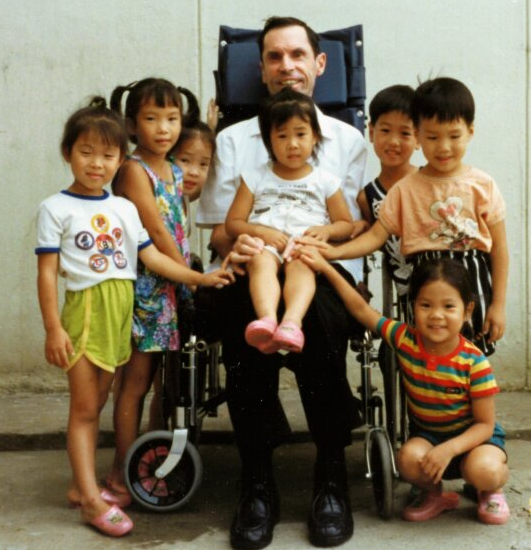
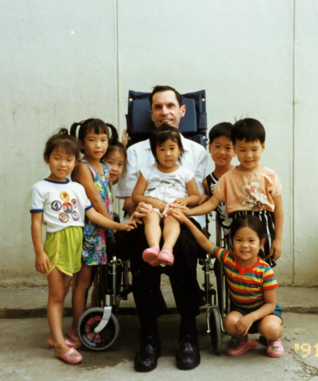

“All praise, honor, and glory for anything good accomplished in my life goes to her and to her alone.”

Fr.al as a priest

Fr.Al with the children
Remains of Fr.Al
Ven. Aloysius Philip Schwartz
From a young age, Aloysius Schwartz felt called to serve God in the poor. Born on September 18, 1930, in Washington, D.C., he grew up with a desire to become a priest and missionary. He would dedicate his life to serving the poor. In 1944, he began his religious formation at St. Charles Seminary in Maryland. Then, he earned a BA degree from Maryknoll College. Later, he decided to go to Belgium to continue his studies at The Catholic University of Louvain. There, he fully prepared himself for his mission of service to those in need.
Beyond his studies, Aloysius lived his mission through acts of charity. While in Europe, he was further inspired to dedicate his priesthood to the service of the poor. Consequently, he spent his free time helping ragpickers as a seminarian. This desire intensified after visiting Banneux, where the Virgin of the Poor appeared. There, he renewed his commitment to serve the poor, inspired by Mary’s message.
In 1957, Father Al was ordained a priest. Soon after, his bishop assigned him to Busan, South Korea. There, he witnessed the devastating effects of the Korean War. In 1961, he founded a U.S.-based charity, Korean Relief, to support his missionary projects. Recognizing the need for help, he founded the Sisters of Mary in 1964.
Thanks to donations from friends and supporters, Father Al built the first Village for Children in South Korea. In these Boystowns and Girlstowns, he and the Sisters of Mary cared for orphans and abandoned children. They provided shelter, education, and hope to children trapped in extreme poverty. Father Al also built hospitals, TB centers, and hospices for homeless men, elderly, disabled children, and unwed mothers.
SHORT TIMELINE OF THE LIFE OF OUR FOUNDER
Sept 18, 1930
Born in Washington, D.C., to Luis F. Schwartz and Cedelia A. Bourassa.
June 29, 1957
Ordained a diocesan priest at St. Martin's Church in Washington, D.C., by auxiliary Bishop McNamara.
Aug 15, 1964
The Sisters Of Mary are founded-Originally called the Mariahweh Sisters, this religious congregation now numbers ovewr 370 Sisters. Today,they serve in South Korea, Philippines, Mexico, Guatemala, Brazil, Honduras and Tanzania.
March 16, 1992
Fr. al was diagnosed with ALS (Lou Gehrig's disease). Before he passed away, Fr.Al named Sister Michaela Kim of the Sisters of Mary as his successor.

Jan 22, 2015
Pope Francis authorized to declare Aloysius Philip Schwartz "Venerable." This decree recognized Fr. Al's heroic virtue, and advanced his journey toward sainthood.
6+
Countries
20k+
Students
160K+
Graduates
5
Year Program